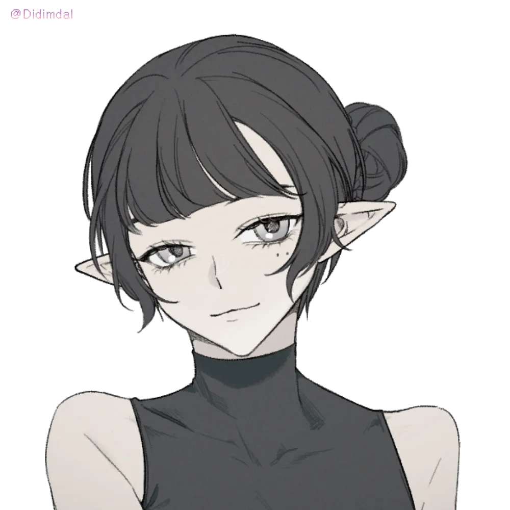

각각 크로스로드에서 벌어진 사건에서 무엇을 했었는지 한번 설명해보실래요? 마엘리스 빼구요!


(ㅇㄴ


음.. 리리는
그 혼란은 여전히 수습중입니다. 하지만 위기는 지나갔습니다
크로스로드에 내린 혼돈은 여전히 그대로입니다
허나 직면한 가장 큰 위협은 벗어났습니다 바로 파티피플의 모험가 덕분에!
"이제 여기 배의 요리사로라도 취업을 해야 하는겐가"


(저도잘몰라서
(마엘은 기본적으로 느긋하고 나른한 성격이에요. 모두를 아가라고 부르고 자기를 할미라고 지칭하는? 그리고 이제 자기는 늙었기 때문에 앞에 나서기보단 파티원들이 어떻게 행동하는지 지켜보고 필요하다면 도움을 주는 쪽이 맞겠네요.)
담주에는 폭풍버닝을!
그러면...
만들어보시죠
마엘레스는 크로스로드에 온지 얼마 안된 시점입니다
길잃은 새끼양 묘사를 생각해둔게 있나요
(무료 급식소만 있었어요
마엘레스는 이 곳에 도달한지 얼마 안된 상태에서 본 것은
비록 무너지긴 하지만 인심까지 무너지진 않은 것 같고
여기서 어쩌다 만난거같나요
한번 좋은 생각 있으면 말해보세요
(쥐가요.
(할머니...!! ㅋㅋㅋㅋㅋㅋ
(영합니다
(MZ
(뭘 감지했지요
마엘레스의 소지품을 터는 장면을 말입니다
"손버릇이 나쁘군"
"잠깐 뭐야 너..!"
(주머니... 나뭇잎 문양이 새겨진 가죽주머니일거에요)
라고 외치고 도망갑니다
"...? 아가?"
"..? (제대로 들은게 맞는지 손으로 자신을 가리킴)"
"아가"
(뭐가 문제냐는듯 고개를 끄덕거립니다)
(이럴수가
딱 플랫폼만 있어요
마엘리스는 여기가 뭘로 보이나요?
(ㅋㅋㅋㅋㅋ
그러세요
(마엘한테는.... 이게.... 흔적....?장소?뭔가있었음?정도로 보이긴하겠네요 천..천은 남아있나요)

"아저씨, 저 왔어요."
(가방 안에서 테이블, 벤치, 주방 도구 등등 나오는 중)
(모두를 슈가하이로 만들기)
"그걸로 새로 만드는 건 어렵진 않을거에요."
"또 쓸만한 폐품이나 고철이라도 수거하러 다녀야겠어요."
"도와주실거죠?"
"부서진 것들을 고치는데는 도움이 되겠지. 하지만 아껴두게나"
"이참에 리모델링 한다고 생각해야죠."
돌아갈 곳은 어디를 말하는걸까요!? 하는 의문점이 문뜩 여러분에게 들지도 모르겠군요ㅕ
주변이 시끄러운걸 느낄 수 있습니다
왠 까만 코볼트들이 외치고 있습니다

"과거 우리는 그를 한번 잠에 꺠웠고 "
"지상에 남은 것은 잿더미 뿐이었다"
"8년이란 시간, 왈든을 집어삼킨 하흐란은 가만히 있었나?"
"그 침략을 저지했던 시간동안 우리는 쓸모없는 일을 했다"
"우리의 진정한 고향은 여기에 있지 않다. 그 종양과 같은 검은 물질에 뒤덮혀있다"
"가야할 곳이 없는 자들은 영원한 떠돌이가 될 뿐이다"
"이곳은 집이었던 적이 없다 모두 결사대 곁으로 모여라!"
"아니면 진정한 고향에 어떤 기여를 하고싶은 것인가?!"
"언젠가 크로스로드에도 밀려올 위협이지"
"아 맞다. 요즘엔 헤그와 같이 동맹까지 맺었다고 들었다. 생각의 변화가 있었나보군. 그래서 자네는 이곳이 '집'으로 보이나보지?"
"마치 이 썩어빠진 나무로 만들어진 도시가 자네의 '집'이라고 그런 망상에 빠진 것은 아니겠지?"
"살아 있다면, 우리가 아니더라도..."
(아
(아저씨로 캐변해올까요?
(종변인가 캐변인가
"식사를 하고 싶거든 젖은 골목으로 가게나"
"그러고보니, 아가들은 최근에 코린트를 본 적이 있니?"
(맞을걸요?
"사라졌어...?" (고민하는 표정)
"그렇게 인간을 좋아하던 친구가 어쩌다가..."
"할미가 죽을뻔 한 적이 있는데 코린트가 살려준 적이 있는데 그 뒤로 영.. 늙질 않지 뭐니"
그러면 할다론은 무언가 비슷한 감각을 느낄지도 모르겠습니다 하지만 그것과는 완전히 같지는 않습니다
화살성채 사람들의 축복은 너무 타오르는듯한 천개의 태양 같았다면
이것은 마치 아주 천천히 저물어가는 태양 처럼 은은하게 느껴집니다
(등짝 까려다가 멈추고 고개를 끄덕임)
"그래, 아가는 코린트의 아이니까 궁금한 게 많겠구나... 코린트의 바보같은 실수라도 알려줄까?"
누군가가 저벅저벅 걸어오는 모습이 보입니다
"아...카이엔 중앙에서 온 자로군"

발렌입니다
그리고 그 위를 뚜벅 뚜벅 걸어오더니 장갑을 한번 고쳐잡습니다
(있다고 해도 이상하진 않을듯
"계류관이 공백인.. 아니 오히려 공모자였던 상황에서 여러분이 없었다면 크로스로드는 정말 위험했을거랍니다"
(ㅋㅋ
"맞습니다. 크로스로드는 지금 도움이 필요한 상황이죠."
"이 모든 일의 해결법이라 부르진 않겠지만 혼돈을 바로잡기 위해서는 계류관이 바로서는게 필요할 것입니다."
"여러분은 모험가지 않습니까? 합리적인 의뢰금이 제시될 것입니다. 그에 맞춰서... 길드마스터인 쉴라에게 도움을 주셨으면 좋겠군요"
"...그리고"
"화살성채의 움직임이 심상치 않아졌습니다."
"저는 이곳에 총 3가지를 위해서 왔습니다. 한가지는 여러분에게 감사를 표하기 위해"
"또 한가지는 여러분의 질문에 답하기 위해"
"그리고 마지막으로는... 여러분에게 부탁이 있어서입니다."
"화살성채는 주기적으로 주변을 습격하고 부수는 우리는 이것을 '소탕'이라고 부릅니다. 화살성채의 소탕을 주기적으로 하고 있었습니다."
"그리고 이번에는 그 이전과도 무언가 느낌이 다릅니다. 화살성채를 자극하는 무언가가 있었을까요?"
(하흐란이요?
(소문만들은할머니)
"그곳의 상황은 어떤지 궁금하구만"
"하흐란은 그 옛 왈든 터를 이제는 정말 자신의 공간이라 생각하는 모양입니다. 아주 조용히 그곳을 봉쇄했으니까요"
"하지만... 최근들어 그들이 왈든 너머로 보이기 시작했다는 소문이 있더군요"
"그것이 강경파들을 자극할까 그것이 두렵습니다"
"그리고 그가 도움을 거부하는한은 중앙에서 무언가 하려는 것은 카이엔 왕조차 그와 전쟁을 각오해야할 것입니다."
".... 그것이 우리는 한가지 해결방법을 가지고 있습니다."
"지금 카이엔 왕가는 새로운 사람을 새로운 변경백으로 세울 생각을 하고 있습니다."
"그의 이름은 아르벨 키시암.. 어쩌면 살아남았을지도 모르는 키시암 가문의 마지막 사람입니다."
(오랜만에 들린 이름에 놀랍니다)
"그의 고발과 증언이 사실이라면... 쥬덴을 백작에서 축출해낼 사유도 충분해질 것이고.. 무엇보다 키시암 가문이라면 새로운 권위 역시 찾아낼 수 있을 것입니다."
"쳇... 그런 사람 따위..."
"그리고 그 사이 하흐란들이 개입이라도 한다면.."
고개를 끄덕입니다
"그래서 여러분은 쉴라를 도와줬으면 합니다."
"그간 여러분이 하던 일과 그리 다르진 않을겁니다."
"여러분이 항상 하던 일.."
"의뢰를 받고.. 해결하는 일을 하면 되는겁니다"
"그리고 어떤 면에서 보면 그녀는 피해자이며 동시에.."
"이 사건의 가장 큰 수혜자니까요"
"그러니 여러분이 그녀를 도와주었으면 합니다"
"크로스로드의 혼란을 수습하지 않으면 힘들겁니다"
"다른 대안이 있으면 좋겠지만 그녀의 다음 대 사람을 찾아내기 전까지는 계류관이라는 중심이 필요합니다"
"길드가 사람을 돕는 기구가 아닌 사람을 해하는 기구로 변해버리겠지요 올코트가 그렇게 바꾼 것 처럼"
"당신 말대로 '올코트 시절'을 그리워하는 이들도 여전히 있는게 사실입니다"
"그리고 어쩌면 지금이 제일 활동하기 좋은 시기일겁니다"
(올코트 싫어!)
길드마스터인 쉴라와 대화를 해보면 좋겠단 이야기를 들으면서 말이죠
"올코트의 친위세력이 온 도시를 난장판으로 만들었을 때 그들에게 동조한 이들이 아직 남아있을걸세"
"자신들은 죄가 없는 척 조용히 숨어있겠지"
그러면 계류관으로 여러분은 걸어가는데
도시 사람들 중 여러분을 알아보는 사람들이 제법 늘어났습니다
그렇게 여러분은 천천히 계류관으로 들어갑니다
활기차진 않지만 그렇다고 완전히 처지지도 않은 것 처럼 보입니다

"많은 일들이 있었다고 들었습니다. 저로부터 발생한 일들.. 먹비단으로부터 생긴 일들 그에 대해 사과드립니다."
(여기 말 하는거 할다론 밖에 없는것이야?
"일부는 여전히 이전에 올코트.. 그러니깐 먹비단의 통치를 계승해야한다고 주장하고 있습니다"
"...(얼굴을 쓸어내림)"
(아놔
올코트와 대화를 나눌 수 있을 것입니다
"기반 같은 것보다는.. 좀 더 목전한 일들을 해결하기 위함이죠"
"이 상황이 수습된다면.."
"어느쪽이든 해결할 필요가 있는 것들로 보이는구만"
(제가 모르는 무언가가 있는건가
(어ㅓ케어케 목숨 부지 시켜놨대요
(길드 의뢰가 아닌 것도 있다고 햇엇으니
(쉴라에게 바치는건
(파티피플의 바텐더 겸 요리사 자리로 취직을 할 수 있어요
(기생충 식 복숭아 얼굴에 비비기
(벨모라 퇴치도 좋고...
(저기서 유일하게 제외일듯 ㅋㅋ
(쥐 노사 의뢰도 괜찮을 것 같뇨...
(그것또한괜찮뇨.
(후원자를팰수있는 흔치않은 기회에 날뛰는 워록의모습...)
"이전에 무기의 일부 조각만 회수하지 않았던가?"
(아뇨 그냥 길었음.)
"저는 모드 씨를 위해서 마우스포크 마을을 가보는 것도 좋다고 생각해요. 크립토 블레이드 관련 의뢰도 궁금하고요..."
"오랜만에 백장갑 씨를 만나는 것도... 어쩐다. 의뢰가 너무 많아도 문제네요!"
고개 끄덕입니다
"하지만 제루스가 관계되어있다면"
"분명 위험한 일로 번질 가능성이 높겠지요"\
"서기관을 한번 들러보시길"
에 있다고 듣습니다
"그럼 가볼까요?"
(오
거의 슬럼에 가까운 곳이지만 이런곳도 있었네요
가장 큰 이유는
의외로 책으로 가득차있고 그 책을 필사하는 사람과
논하는 사람들로 가득차있습니다
습해서 보관하기에는 최악의 환경이겠지만요 ㅋㅋㅋㅋ
와 여기서 어떻게 찾지 하면서 돌아보고 있어요
조사
5
조사
5
(고마워요 진짜)
조사
25
조사
9
Guidance
조사
7
(조사는잘해?
(진짜 웃긴할머니네 이거
그러면.. '변방지역의 상냥한 군주' 이라는 제목입니다
"비록 추억은 다 잊었지만....."
그는 흉측하게 생긴 외모와 죽지않는 수명 탓에 많은 사람에게 기피 당했습니다
그는 그렇게 이곳 지역에 도착했습니다. 아직 사람들이 잘 살지 않았던 시기의 태동기
제루스는 지역을 방랑하며 이들을 치유하고 도왔습니다
그가 다녀간 곳의 사람들은 병도 이겨낼 수 있었고 그가 가르쳐준 지식으로
마을의 땅을 비옥하게 만들었습니다
이런 내용이 적혀있습니다
그렇게 여러분은.. 제루스가 있을 것으로 예상되는 곳..
변망 마을로 떠납니다
마지막에 갑자기 횃대가 되다...
넵 목요일 가능해요